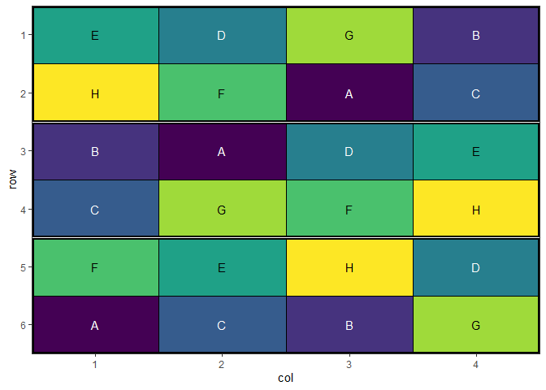

Overview
The speed package optimizes spatial experimental designs by rearranging treatments to improve statistical efficiency while maintaining statistical validity. It uses simulated annealing to:
- Minimize treatment adjacency (reducing neighbor effects)
- Maintain spatial balance across rows and columns
- Respect blocking constraints if specified
- Provide visualization tools for design evaluation
Installation
You can install the development version of speed from GitHub with:
# install.packages("pak")
pak::pak("biometryhub/speed")Features
- Flexible optimization of experimental designs
- Support for blocked designs
- Customizable optimization parameters
- Built-in visualization functions
- Progress tracking during optimization
- Early stopping when convergence is reached
See the package documentation for more detailed examples and options.
Basic Example
A simple example optimizing a 4×3 completely randomised design with 4 treatments:
library(speed)
# Create a simple design with 3 replicates of 4 treatments
df <- data.frame(
row = rep(1:4, each = 3),
col = rep(1:3, times = 4),
treatment = rep(LETTERS[1:4], 3)
)
# Set seed for reproducibility
set.seed(42)
# Optimize the design
result <- speed(df, "treatment")
#> Iteration: 1000 Score: 1 Best: 1 Since Improvement: 734
#> Iteration: 2000 Score: 1 Best: 1 Since Improvement: 1734
#> Early stopping at iteration 2266
# Plot the optimized design
autoplot(result)
# View optimization progress
plot_progress(result)

Blocked design
You can also optimize designs within blocks:
# Create a design with blocks
df <- data.frame(
row = rep(1:6, each = 4),
col = rep(1:4, times = 6),
treatment = rep(LETTERS[1:8], 3),
block = rep(1:3, each = 8)
)
# Set seed for reproducibility
set.seed(42)
# Optimize while respecting blocks
result <- speed(df,
"treatment",
swap_within = "block",
iterations = 5000)
#> Iteration: 1000 Score: 2.571429 Best: 2.571429 Since Improvement: 352
#> Iteration: 2000 Score: 2.571429 Best: 2.571429 Since Improvement: 1352
#> Early stopping at iteration 2648
# Plot the design with block boundaries
autoplot(result)